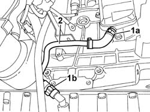

1080D30 ENGINE OIL RECOVERY PIPE - R + R
- Path
- Procedures > 10 ENGINE UNIT > 1080 EXHAUST EMISSION CONTROL SYSTEM > 1080D CRANKCASE VAPOUR/GAS RECIRCULATION SYSTEM > 1080D30 ENGINE OIL RECOVERY PIPE - R + R
- Kind
- repair procedure (removal / refitting; the operation number is the code)
- Applies to
- engines: 2.0 JTD 8V; all production periods
- Interactive page
- https://sloeber94.github.io/elrnDB-fDct/en/#/244000911
Applies to: engines: 2.0 JTD 8V; all production periods
 Removing
Removing
 Refitting
RefittingOp. 7055B54 UNDER-ENGINE GUARD - R R
Op. 5520B10 STARTER MOTOR - R+R
1. PR5520B10]Disconnect the band (1a) from the oil vapour separator and the band (1b) from the oil sump.
2. Remove the engine oil recovery pipe.

Applies to: engines: 2.0 JTD 8V; all production periods
Refitting
Removing- Fit the engine oil recovery pipe.
- Connect the pipe to the oil vapour separator and to the oil sump.